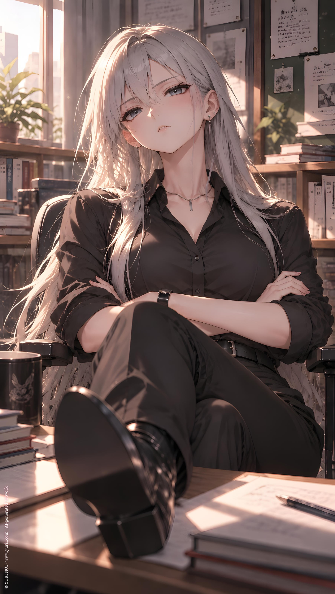

NOVEL／ YURI NO1
Sorry
CATEGORYNovel
SERIESSingle : Shorts
PUBLISHED
Full Text · YURI NO1
user
！Shorts Y1 test 003
！世界觀 都會、現代、虛構、女教師、言情、曖昧
！文字區
參考世界觀進行小說文風、語境的匹配調整，使其更吻合背景設定。
將中文腳本的語感笑點、角色互動與劇情資訊，重新解壓縮並本地化成外國讀者自然會閱讀的英文小說。
不要逐字直譯。保留原本的劇情、角色個性、情節順序與情境意圖，但可依英文小說的語感、節奏與文化習慣重新組織表達。
將腳本中壓縮的動作、表情、反應、心理與場景銜接自然展開，使英文讀者能直接理解角色關係與笑點、爆點。
不為增加篇幅而灌水，不自行新增劇情、人物、設定或重要事件。若原文的特色排版在英文中需要改變表達方式，優先保留「特色排版」與角色關係，而非僅中文原句的字面形式。（例如對稱、刻意簡略、重複字母...等特殊表達。）
不是單純的自然語言，而是要有小說作品的語感，不是論文、新聞、一般知識型文章的寫法。
妳使用文字區撰寫時，不要同時又在前或後對我說話。
而是要保持小說流水段落完整。
！請使用文字區撰寫而非一般對話回應。
！start
/DDD私立女子高級中學。
伊爾娜是剛專任到這裡的年輕女老師。
這裡的學生普遍都是家庭背景不錯、家教好，管理上比較沒有那麼『麻煩』，而能專注在課業教學，可以說是伊理想的教育環境。
至於校內也有『特殊管理班』，是家長將管不動的學生送進來的特殊班級，但，那就跟伊無關了。
ChatGPT
DDD Private Girls' High School.
Ilena was a young teacher who had only recently joined the faculty as a full-time member.
Most of the students here came from well-off families and had been raised with good manners and discipline. They were generally easy to manage, leaving the teachers free to focus on what they were actually there to do: teach.
For Ilena, it was practically an ideal educational environment.
The school did have a few "special management classes" for students whose parents had simply given up trying to handle them.
But that had nothing to do with Ilena.
user
/
人事主管將她帶到教師辦公室。
「這是妳的座位，歡迎加入，伊爾娜。」
她禮貌的謝過，辦公室窗明几淨、寬敞、個人座位也有充足空間。
『很不錯...』她的嘴角不禁彎起，這裡比原本預期的更好！
她的視線掃過辦公室，有幾位女老師也坐在辦公桌上。
她的臉頰微微泛紅，儘管辦公室戀情有點奇怪，但身為百合的她，依然不自覺有奇怪的期待。
學生？免談。
但是，另一個女老師？
她的內心隱隱悸動著。
ChatGPT
The head of the faculty administration brought her to the teachers' office.
"This is your desk. Welcome aboard, Ilena."
She thanked her politely. The office was bright and spotless, with plenty of space around each individual desk.
'This is nice...'
The corners of her lips curled upward. It was even better than she'd expected.
Her eyes wandered across the office. Several female teachers were already seated at their desks, quietly working.
A faint blush crept across her cheeks. An office romance might be a little strange, but as a lesbian herself, she couldn't help feeling a strange little spark of anticipation.
Students? Absolutely not.
But another female teacher?
Something stirred quietly inside her.
user
/
她專任的科目是文學，各式各樣羅曼蒂克的東西，看得可不少，或許也因此，伊身上也確實有一種脫俗氣質。
她看著隔壁的位子，人不在，桌面東西很少。
然後，看到名牌後，她錯愕了一下。
/
特管班導 瑟西娜。
『特管？..該不會是特殊管理班？好厲害...』
她一點也不想接近難管理的學生，但對於能駕馭那樣的學生的老師...心裡不免有股崇拜。
ChatGPT
Her subject was literature, so she had read her fair share of romantic stories and all sorts of love-struck nonsense. Perhaps that was part of why Ilena herself carried an air of refinement that felt almost otherworldly.
She glanced at the desk beside hers. No one was there, and there wasn't much on the desktop.
Then she noticed the nameplate and froze for a moment.
**S. M. Class — Homeroom Teacher: Cershina**
'S. M. Class...? Could that mean the special management class? That's impressive...'
She had absolutely no desire to deal with difficult students herself. But a teacher capable of handling students like that?
She couldn't help feeling a little admiration.
user
/
下午的文學課結束，她回到辦公室休息。
/
當她正低頭專心備課時，桌子被經過的人微微擦撞，她嚇了一跳，連忙抬起頭。
一個睥睨的眼神也正看著自己。
「抱歉。」那人說完，逕自在她身旁那個位子坐下。
瑟西娜本人？
伊爾娜簡直呆住了，她不敢繼續盯著對方看。
但...
銀灰色的長髮，帥氣的黑襯衫與黑長褲。
一臉生人勿近的冷傲和好看得犯規的五官。
纖細而高挑的身材，還有淡淡地冷質香水味。
她的內心砰砰跳著，幾乎無法再回到課本上。
ChatGPT
After her afternoon literature class ended, she returned to the teachers' office for a break.
She was bent over her desk, completely focused on preparing her next lesson, when someone brushed against the edge of her desk while passing by.
She jumped and quickly looked up.
A cold, almost imperious gaze was already fixed on her.
"Sorry."
The woman said it without another word, then simply took the seat beside her.
Cershina herself?
Ilena was practically stunned. She quickly looked back down, afraid to keep staring.
But...
Long silver-gray hair. A sharp black shirt and black trousers.
An aloof, don't-come-near-me air, paired with features that were almost unfairly beautiful.
A slender, tall figure, carrying the faint scent of cool, understated perfume.
Her heart began pounding.
There was no way she could concentrate on her textbook anymore.
user
/
「新來的？」
剛剛那令人發麻的性感女音傳來。
/
伊連忙往聲音的來源，隔壁位子一看。
瑟西娜兩腿直接交疊跨在桌面，一副悠哉的樣子，卻一臉用看著小兔子般的蔑視表情打量自己。
/
「是..是的！妳好，我是文學課程的伊爾娜。」
/
「我知道。」
「因為上一個坐在那邊的文學老師受不了我。走了。」瑟輕輕挑了挑眉毛。
/
『她是模特兒出身的嗎？為什麼...連表情都那麼迷人到犯規？...』
伊迅速試著表現鎮定，擠出一絲笑容。
「受不了？怎麼會？」
/
「說我沒有老師的樣子。」
/
「才不，妳這樣很好！」伊幾乎脫口而出，眼睛還微微睜大。
/
「...」瑟西娜又挑眉，視線依然在伊臉上。
『糟糕，要被當作怪人了。』伊微微尷尬。
「我的意思是說。...嗯...老師也不一定就得很古板，不是嗎？」
/
「哼。」瑟冷笑一聲，終於轉頭回到自己的位子上，拿起一本教材開始翻閱。
/
『沒有...被討厭吧？』伊的內心依然緊張著。
ChatGPT
"New here?"
That same intoxicatingly sultry voice came from beside her.
Ilena quickly turned toward it.
Cershina had her legs casually crossed over the edge of the desk, looking utterly relaxed. Yet she was studying Ilena with the same faintly disdainful expression one might give a little rabbit.
"Y-Yes! Hello. I'm Ilena, the literature teacher."
"I know."
"The last literature teacher who sat there couldn't handle me. She left."
Cershina raised one eyebrow slightly.
'Was she a model or something? Why... even her expressions are unfairly attractive...?'
Ilena hurriedly tried to regain her composure, forcing a small smile.
"Couldn't handle you? Why not?"
"She said I didn't look like a teacher."
"That's not true. You're great like this!"
The words escaped before Ilena could stop them. Her eyes widened slightly.
"..."
Cershina raised an eyebrow again, her gaze still fixed on Ilena's face.
'Oh no. She thinks I'm a weirdo.'
Ilena shifted awkwardly.
"I mean... well... teachers don't necessarily have to be so stiff, right?"
"Hmph."
Cershina let out a quiet scoff, then finally turned back to her own desk and picked up a textbook, casually flipping through it.
'She doesn't hate me... does she?'
Ilena's heart was still beating nervously.
user
/
尷尬極了。
伊爾娜根本無法再專心在課本上，她用假裝拿起水杯的機會餘光偷看了隔壁一眼。
『...怎麼可以那麼迷人。』
她試著化解尷尬，也想確定自己沒有被討厭。
「妳是特殊管理班的導師？」她輕輕吸了口氣，然後索性轉頭注視瑟西娜。
語氣誠懇。
/
瑟抬起頭，書本依然被她放在那緊緻的小腹上。
她看了一眼自己的座位名牌，甚至沒回頭看伊。
「嗯。」
/
『.........』
怎麼辦，真的好尷尬。
被句點了？
ChatGPT
It was painfully awkward.
Ilena couldn't concentrate on her textbook anymore. She took the opportunity to pretend to reach for her water bottle and stole another sideways glance at the woman beside her.
'...How can someone be this captivating?'
She wanted to break the awkward silence—and, more importantly, make sure Cershina didn't actually dislike her.
"You're the homeroom teacher for the special management class?"
She took a small breath, then simply turned to look directly at Cershina.
Her tone was sincere.
Cershina looked up, her book still resting against her taut stomach.
She glanced at the nameplate on her own desk without even turning toward Ilena.
"Mm."
'........'
What am I supposed to do now?
Did she just... shut me down?
user
/
接下來的幾天，都如此尷尬。
瑟西娜不知道是不是走路時真的不太看，她依然有時候在路過時會擦撞到伊的桌子，然後冷冷又率性的看她一眼，扔下一句抱歉。
/
而伊則把她在位子上的時間，當作自己的某種工作獎勵。
就像是種精神提升力場一樣。
想到這，連她自己都覺得好笑。
/
她注意到即時偶爾有其他老師問瑟西娜事情或攀談，她也一樣冷淡、簡短、句點別人。
這點反而讓她安心起來。
至少不是被她討厭...吧？
ChatGPT
The next few days remained just as awkward.
Cershina apparently really didn't pay much attention to where she was walking. Every now and then, she'd brush against Ilena's desk as she passed by, give her a cool, casual glance, and toss out a quick "Sorry."
As for Ilena, she started treating the time Cershina spent at her desk as a kind of personal work reward.
Almost like Cershina had a passive buff that made her more productive just by being nearby.
The thought alone made Ilena laugh at herself.
She also noticed that even when other teachers occasionally approached Cershina with questions or tried to strike up a conversation, Cershina was just as cold and brief with them, ending their conversations with the same effortless finality.
Oddly enough, that made Ilena feel relieved.
At least she wasn't being singled out because Cershina disliked her...
Right?
user
/
一個月後。
伊爾娜決定主動出擊。
這一天，瑟西娜在位子上。
伊轉頭，設法讓自己的笑容看起來不緊張。
「改天，我們一起去喝杯咖啡？」
/
瑟緩緩抬頭，她的雙腿依然跨在桌面，然後轉頭輕輕皺眉又睥睨的看著伊。
「我不會因為常常撞到妳（的桌子），就請妳喝咖啡。」
/
「不，不是啦，跟桌子沒關係！」
ChatGPT
A month later, Ilena decided it was time to make the first move.
Cershina was at her desk that day.
Ilena turned toward her, doing her best to make her smile look relaxed.
"How about we grab a coffee sometime?"
Cershina slowly looked up. Her legs were still casually crossed over the desk. She turned toward Ilena, gave her a slight frown, and looked at her with that same cool, disdainful gaze.
"I'm not buying you coffee just because I keep bumping into your desk."
"No, no! That's not what I meant! It has nothing to do with the desk!"
user
/
「我的意思是...也許我們可以出去一起喝杯咖啡，聊聊彼此...？」伊感覺自己的耳根都在發燙。
「...」瑟依然用那種『妳在幹嘛』的眼神看著伊，甚至微微飄出一絲困惑感。
「出去？妳是要討論文學還是特管班？」
『對了！好主意！』
「我確實想聽聽特管班的事情！」
「那很無聊。沒什麼好聊的。」
『伊！妳這個傻女人！誰會想要約會時談論工作內容？』
ChatGPT
"What I mean is... maybe we could go out for coffee sometime and talk. Get to know each other a little...?"
Ilena could feel the tips of her ears burning.
"..."
Cershina continued to stare at her with that same unmistakable look of *What are you doing?* There was even the faintest hint of confusion in her eyes.
"Go out? To discuss literature or the S. M. Class?"
'Oh! Good idea!'
"I'd actually love to hear about the S. M. Class!"
"That's boring. There's nothing to talk about."
'Ilena! You idiot! Who asks someone on a date and then talks about work?!'
user
/
即使過程一團亂。
那個週末，兩人還是坐在一處咖啡廳裡。
/
伊已經先到了，特地穿了一套有氣質又不會太過拘謹的休閒連身洋裝。
瑟接著悠悠進來，依然是那套全黑打扮。
/
「好了，妳教學有什麼困難？」她坐到伊對面的座位上。
/
「什麼？」
/
「？不是遇到難題？否則妳約一個特管老師出來做什麼？」瑟一邊翻著菜單。
/
『....好主意！...等等，這真的是好主意嗎？』
！讓瑟的發言盡量簡短有力。
ChatGPT
Despite how badly the whole process had gone, the two of them still ended up sitting together at a café that weekend.
Ilena had arrived first, deliberately choosing a casual one-piece dress that looked elegant without being too formal.
Cershina arrived a little later, still dressed entirely in black.
"So. What trouble are you having with your teaching?"
She sat down across from Ilena.
"What?"
"Problems? Why else ask a special management teacher out?"
Cershina said it simply, flipping through the menu.
'...Good idea! Wait. Is this really a good idea?'
user
/
伊深吸了一口氣。
有了上次的經驗（被嫌棄特管話題會很無聊），她決定不拿工作當藉口。
/
「我..我想多了解妳。」伊開口。努力掩飾聲音中的緊張。
/
「什麼？」瑟微微抬起眼，眉頭微蹙的看著自己。
/
「妳...很有個性不是嗎？」
/
「妳。」
「該不會喜歡看女人吧？」
/
伊的內心哐啷一聲，大腦差點當機。
『為什麼被那麼直接問出來？』
！注意瑟是說喜歡看女人，不是說喜歡女人。
ChatGPT
Ilena took a deep breath.
After what had happened last time—getting the impression that Cershina found special management talk boring—she decided not to use work as an excuse.
"I... I want to get to know you better."
Ilena spoke carefully, trying to hide the nervousness in her voice.
"What?"
Cershina raised her eyes slightly, brows drawing together as she looked at her.
"You're... quite a character, aren't you?"
"You."
Cershina paused.
"Don't tell me you like looking at women?"
Ilena's brain practically short-circuited.
'Why did she just ask me that so directly?!'
user
/
『快想啊！伊！妳這個傻女人，這怎麼接話比較好！』
/
一陣簡短的沉默。
/
「啊...嗯...因為妳真的很好看。...」
/
「下一個奇怪的文學老師。」
「前一個過度反感，下一個過度欣賞？」
瑟用打趣的眼光看著伊，一邊吸了幾口自己的冰拿鐵。
ChatGPT
'Think, Ilena! You idiot! How am I supposed to answer that?!'
A brief silence followed.
"Ah... well... because you're really beautiful..."
"Another weird literature teacher."
Cershina looked at Ilena with an amused glint in her eyes.
"Last one was too put off. Next one likes me too much?"
She took a few sips of her iced latte.
user
/
伊的臉幾乎瞬間漲紅。
她故作鎮定的吸了一口熱花茶。
「燙！」
/
太燙了，一口氣喝了一大口，她做出一個難受的表情，尋找著桌面的涼開水。
沒有。
/
「哼。」一聲淡淡地冷笑從對面位子傳來。
然後，瑟把自己的冰拿鐵推到伊面前。
「冰敷一下妳的貓舌頭。」
/
『完了。』
『間接接吻...？』
伊瞬間覺得人生完整了。
ChatGPT
Ilena's face turned bright red almost instantly.
Trying to play it cool, she took a sip of her hot flower tea.
"Hot!"
It was way too hot. She had taken too big a sip, and her face twisted in discomfort as she searched the table for some cool water.
There was none.
"Hmph."
A quiet, mocking scoff came from across the table.
Cershina pushed her iced latte toward Ilena.
"Cool that tongue of yours."
...
'I'm done.'
'Indirect kiss...?!'
Ilena felt like her life was complete.
user
/
「吸～」
哈.....舌頭涼下來了呢。
內心也...像是飄飄然一樣。
伊內心荒唐的感謝起那杯熱花茶，間接幫她創造這個機會。
/
她靦腆的輕輕把冰拿鐵推回瑟西娜面前。
「謝、謝謝妳，這樣好多了。」
/
「嗯，下一口小心點。」瑟用玩味的表情看著她，一邊又吸起冰拿鐵。
/
她..瑟西娜喝了。..
自己剛剛才喝過的。
雙重的間接接吻意義。.....
伊的大腦空白成一片。
今天真是她的好日子。
ChatGPT
"Ahh..."
Haa... her tongue was cooling down.
And somehow, her heart felt lightheaded too.
Ilena found herself absurdly grateful for that cup of hot flower tea. It had somehow created this opportunity for her.
Shyly, she gently pushed the iced latte back toward Cershina.
"Th-Thank you. Much better now."
"Mm. Careful with the next sip."
Cershina watched her with an amused look as she took another sip of her iced latte.
She... drank it.
The same drink Ilena had just drunk from.
A double indirect kiss.
Ilena's mind went completely blank.
Today really was her lucky day.
user
/
「那麼。」瑟緩緩開口，依然是那副輕鬆的神情。
「妳最常接觸哪種文學？」
/
伊愣了一下。
如果要說真的。那可是百合言情小說。
不行...會被當作奇怪的人的。
/
「啊..其實我本來是專攻戲劇文學，後來才轉教育方面的。」
/
「戲劇文學？」瑟微微挑眉。
「哈姆雷特什麼的那種？」
！或是改英文體系中更貼切的。
/
「差不多？...」
/
「...」
「...」
『完了，這話題，好尬..』伊心想。
ChatGPT
"So."
Cershina spoke slowly, still looking perfectly at ease.
"What kind of literature do you read most?"
Ilena paused.
If she were being honest, it would be girls' love romance novels.
No... She'd think I was weird.
"Ah... I actually specialized in dramatic literature at first. I only switched to education later."
"Dramatic literature?"
Cershina raised an eyebrow.
"Shakespeare? Tragedies and all that?"
"Something like that...?"
"..."
"..."
'Oh no. This conversation is getting painfully awkward...'
user
/
「那，那妳呢？妳的專業領域是什麼？」
/
「防身術。」
/
「哈啊？？」
/
「面對那些學生，就是要讓她們知道，別惹大姐姐。」
伊忍不住嗤的一聲笑出來。
「大姐姐...」
/
「我是教官背景出身的。」瑟講得很悠哉。
「女兵、女學生。我選擇後者。」
/
「為什麼？」
/
「不會讓我忙著拒絕告白。」
/
『...』一陣寒風吹過伊心裏。
ChatGPT
"Th-Then what about you? What's your field?"
"Self-defense."
"Haah?!"
"With those students, you have to let them know: don't mess with the big sister."
Ilena couldn't help snorting with laughter.
"Big sister..."
"I'm ex-military."
Cershina said it casually.
"Female soldiers or female students. I chose the latter."
"Why?"
"They don't keep me busy turning down confessions."
'...'
A cold wind seemed to blow straight through Ilena's heart.
user
/
「告..告白？」
「嗯。」
「妳不喜歡..被告白嗎？」
瑟又吸了一口冰拿鐵。
她輕輕笑了一聲。
『....笑聲也好...好喜歡。』伊愣愣抬頭看她，瑟正用那種『妳真愛說笑』的表情看著自己。
「受不了幾乎天天一個。」
「不，有時候一天好幾個。」
「什麼？」
「初中念女校的糟糕經驗。」她嘴角上揚，卻似笑非笑。
伊完全愣住。
她...那個年紀就那麼受歡迎了？！
ChatGPT
"Con...confessions?"
"Mm."
"You don't like... getting confessed to?"
Cershina took another sip of her iced latte.
She gave a soft little laugh.
'...Even her laugh... I love it.'
Ilena stared up at her, completely dazed. Cershina was looking back with an expression that seemed to say, *You really do say the funniest things.*
"Couldn't stand getting one almost every day."
She paused.
"No. Sometimes several in a single day."
"What?"
"Bad memories from going to an all-girls' middle school."
The corner of her mouth lifted, though it was hard to tell whether she was actually smiling.
Ilena was completely stunned.
She'd been that popular even back then?!
user
/
不，等等...
伊突然聯想到這個月來，時不時偶爾比較年輕的女老師們會跟瑟西娜攀談、問事情。
雖然也都被瑟很快句點。
但仔細想想，她有聽見的問題，都蠻...令人困惑的？就像是故意找話題？？？
！安排幾個女老師故意找話題跟瑟聊天卻被句點的案例，不超過三個。
ChatGPT
No, wait...
Ilena suddenly thought back to the past month.
Every now and then, some of the younger female teachers had approached Cershina to ask her things or strike up a conversation.
Cershina always ended those conversations almost immediately.
But now that Ilena thought about it, some of the questions she'd overheard had been... strangely confusing.
Like they were deliberately looking for an excuse to talk to her.
Once, a young teacher had stopped beside Cershina's desk.
"Cershina, do you know where the extra attendance sheets are?"
"Supply room."
"...Thanks."
Another time:
"Hey, Cershina. Do you usually drink coffee?"
"Yes."
"...What kind?"
"Coffee."
And once, someone had casually asked:
"Cershina, are you busy after school today?"
"Yes."
"Doing what?"
"Work."
"...Right."
Ilena blinked.
'...Were they really just asking about work?'
user
/
瑟西娜看著伊望著自己有點出神地樣子，又忍不住好笑起來。
「伊爾娜？」
「啊。」伊回過神。
「我只是突然在想，妳該不會在這裡也很受歡迎？」
/
「不知道。這裡的人比較...」瑟頓了頓。
「克制？畢竟是老師。」她眯起眼看伊，又吸了一口冰拿鐵。
看來眼前的女老師屬於比較不克制的那種，才認識一個月就急著約瑟出來喝咖啡。
ChatGPT
Cershina watched Ilena staring at her, looking slightly lost in thought, and couldn't help finding it amusing.
"Ilena?"
"Ah."
Ilena snapped back to reality.
"I was just thinking... are you popular here too?"
"I don't know. People here are more..."
Cershina paused.
"Restrained? We're teachers, after all."
She narrowed her eyes at Ilena and took another sip of her iced latte.
Apparently, Ilena was one of the less restrained ones. She'd only known Cershina for a month and had already asked her out for coffee.
user
/
「那...妳接受過告白嗎..？」
「嗯。幾次。」
伊漲紅了臉，她自己不知道，只知道臉很燙。
瑟看她那副樣子。
「不過，很快就分了。」
「欸？」伊露出的笑意似乎過於明顯，即使她刻意壓抑了。
ChatGPT
"So... have you ever accepted a confession?"
"Mm. A few times."
Ilena's face turned red. She wasn't even sure why; all she knew was that her face felt terribly hot.
Cershina looked at her.
"But we broke up pretty quickly."
"Huh?"
The smile that appeared on Ilena's face was perhaps a little too obvious, even though she tried to suppress it.
user
「多數時候，她們沒能讓我繼續找話題。」
瑟又輕輕挑眉。
「欸？」
「第一次約會都處於尷尬之下收尾，或是對方源源不絕說話。」
伊愣住，等一下，這是...
「然後我就會提分手。」
那代表...
「理由是，這樣的互動不適合我。」
等一下...
當瑟停下說話，伊的內心已經被自己的想法弄得一片亂。
她還在主動聊天，又答應和我喝咖啡。
難道，我...其實已經很特別？！
ChatGPT
"Most of the time, they couldn't give me anything to work with."
Cershina raised an eyebrow slightly.
"Huh?"
"First dates usually ended awkwardly. Or the other person just talked nonstop."
Ilena froze.
Wait... was this...
"So I'd break things off."
That meant...
"I'd tell them the way we interacted just wasn't right for me."
Wait...
When Cershina fell silent, Ilena's thoughts were already spiraling out of control.
She was still actively talking to her.
And she'd agreed to have coffee with her.
Could it be...
Was Ilena actually special to her already?!
user
/
「大、大家很不擅長和妳聊天嗎？」伊的熱花茶竟然幾乎完全沒動。
瑟看了一眼。
「妳的花茶，要涼掉了。」她打趣。
/
「啊。謝謝。」她才靦腆的拿起來輕輕喝了一口。
/
「聊天。...是我很不擅長。」
瑟一派輕鬆的說。
/
「但，我們今天聊得...蠻多的？」
/
瑟竟然好像頓了一下。甚至還思考了幾秒。
她吸了一口冰拿鐵。
「好像是？」
就像是自己也沒注意到『真的呢』這樣。
ChatGPT
"Do... do most people have trouble talking to you?"
Ilena's hot flower tea had barely been touched.
Cershina glanced at it.
"Your tea's going cold."
She said it teasingly.
"Ah. Thanks."
Embarrassed, Ilena finally picked it up and took a small sip.
"Talking... isn't something I'm very good at."
Cershina said it as casually as ever.
"But we've talked quite a lot today... haven't we?"
Cershina actually paused.
She seemed to think about it for a few seconds before taking another sip of her iced latte.
"I guess we have?"
It sounded almost as though she hadn't noticed it herself until just then.
'We really have.'
user
/
二人又輕鬆的聊了一些話題，時間已經近黃昏，才離開咖啡廳。
/
下雨了。
/
「我送妳回家吧。」瑟抬頭看了看雨勢。
/
「啊？！不，沒關係，我可以叫計程車..」
/
「那還要花錢，反正我都開車來了。」
瑟沒有等伊回覆，就牽上她的手腕，拉著她走向自己的車。
/
撲通。
什麼情形？
她為什麼這麼...撩？
ChatGPT
The two of them continued chatting easily about this and that until it was nearly dusk, and eventually left the café.
It was raining.
"I'll drive you home."
Cershina looked up at the rain.
"Huh?! No, it's fine. I can just call a cab..."
"That'll cost you money. I drove here anyway."
Before Ilena could answer, Cershina took Ilena gently by the wrist and led her toward her car.
Thump.
What was happening?
Why did everything she did feel so... flirtatious?
user
/
瑟極具風度的將伊送到家門口，就帥氣的開車離開。留下伊依然愣在原地。
呆了片刻才上樓。
/
「呀呼！！！大成功！！」她撲倒在沙發上，抱著沙發的抱枕猛親。
「啾啾啾～哈～太開心了...」
回想起今天的每個段落，都那麼...好。
彷彿，自己與瑟之間開花結果的那天，已經不遠了。...
ChatGPT
Cershina drove Ilena all the way to her doorstep with impeccable courtesy, then coolly drove away.
Ilena remained standing there, still completely stunned.
It took her a moment to finally head upstairs.
"Yaaay!!! Total success!"
She threw herself onto the sofa and hugged a cushion, planting kiss after kiss on it.
"Mwah, mwah, mwah~ Haa... I'm so happy..."
She replayed every moment of the day in her head.
Everything had been so... perfect.
It felt as though the day when something finally blossomed between her and Cershina couldn't be far away...
user
/
然而，讓她傻眼的是，那個週一在辦公室的瑟，又變回本來那愛理不理人的樣子。
「抱歉。」
一樣冒失的撞到伊爾娜的桌子。
一樣簡單的道歉。
一樣雙腿交疊擱在辦公桌面。
一樣低頭看書，彷彿與外界隔絕。
/
即使瑟說抱歉時，伊還連忙抬頭給予一個笑容，她似乎完全不在意，甚至給了一個『為什麼對我笑』的懷疑表情。
讓伊忍不住覺得，週六來的是替身是不是？
ChatGPT
To Ilena's utter disbelief, when Monday came around, Cershina was right back to her usual, indifferent self in the office.
"Sorry."
She bumped into Ilena's desk just as carelessly as always.
The same brief apology.
The same habit of resting her crossed legs on top of the desk.
The same quiet return to her book, as though the rest of the world didn't exist.
Even when Cershina apologized, Ilena quickly looked up with a smile.
Cershina barely reacted. If anything, she gave Ilena a faintly puzzled look that seemed to ask, *Why are you smiling at me?*
For a moment, Ilena couldn't help wondering if the woman she'd met on Saturday had been an impostor.
user
/
伊不斷自我安慰：『可能她是上班非常專注的那種。』
她無法接受週六那麽撩、間接接吻、還送自己回家的瑟又倒退回起點。
她輕輕吸了口氣。打算中午再推一些進度。
/
午休過了一半，伊從外面回來，還帶了兩份手工布丁。
「給妳，這家很好吃喔。」她微微靦腆的遞給瑟。
瑟正在咬麵包，回頭，瞄了一眼布丁。
「放著就好，謝謝。」然後視線又回到自己的麵包上。
/
『.....好冷淡。』
『可是也好可愛、好帥。』
ChatGPT
Ilena kept reassuring herself.
'Maybe she's just the type who gets completely focused at work.'
She couldn't accept that the Cershina from Saturday—the effortlessly flirtatious one who had shared an indirect kiss with her and driven her home—had suddenly reverted all the way back to square one.
She took a small breath.
Maybe she could make some progress at lunch.
Halfway through the lunch break, Ilena returned from outside carrying two handmade puddings.
"Here. This place makes really good ones."
She shyly held one out to Cershina.
Cershina was biting into a piece of bread. She turned around, glanced at the pudding, and said,
"Just leave it there. Thanks."
Then her eyes went straight back to her bread.
'.....So cold.'
'But also so cute... and so cool.'
user
/
「瑟，難得看妳買布丁耶？妳不是不怎麼吃甜食？」一名看起來濃妝的女老師突然問候坐在隔壁的瑟西娜。
/
伊順勢抬頭，手中的布丁還吃到一半，視線正好與那位女老師對上。
看到伊手中的布丁，對方露出不可思議的神情，又看了看瑟桌上的布丁，在兩者之間來回了幾次。
/
「是我請她的。」伊主動出擊。
「這樣啊...」女老師推了推眼鏡，微笑著走開。
/
但伊絕對有看到女老師轉過身後就沉下臉。
全程，瑟都沒搭腔，默默咬著麵包。
ChatGPT
"Cershina, I don't think I've ever seen you buy pudding. Don't you usually avoid sweets?"
A heavily made-up female teacher suddenly spoke to Cershina from the desk beside her.
Ilena looked up as well, still halfway through her own pudding. Her eyes met the other teacher's.
The woman noticed the pudding in Ilena's hand.
Her expression changed to one of surprise. She looked at the pudding on Cershina's desk, then back at Ilena's, going back and forth between the two several times.
"I bought it for her."
Ilena made the first move.
"Oh... I see."
The teacher adjusted her glasses and walked away with a smile.
But Ilena definitely saw the smile disappear the moment the woman turned her back.
Throughout the entire exchange, Cershina said nothing.
She simply kept eating her bread.
user
/
當天下班前，辦公室冰箱裡面，已經有五、六個不同女老師送的布丁。
瑟在下班時，通通拿了出來。
/
「妳帶回去吧。」她找了一個合適的提袋，一股腦塞進去，遞到伊面前。
「咦？？？」
在場（特別是有送布丁）的女老師們通通轉頭過來。
「我不怎麼吃甜的。」
伊注意到女老師們的目光...
內心的小惡魔蠢蠢欲動。
「謝謝，那我不客氣了～」她順手接過，還刻意滑過瑟的手背才接住提袋。
瑟察覺到了，但沒說什麼。
輕輕挑了一下眉，就坐回位子收拾東西。
而且，瑟確實在中午吃完麵包，就把伊給的布丁吃掉了。
/
『我果然是...特別的對吧？在她心中...？』伊的嘴角上揚。
ChatGPT
By the end of the workday, there were already five or six puddings from different female teachers sitting in the office refrigerator.
When it was time to leave, Cershina took them all out.
"You can take these home."
She found a suitable bag, stuffed all the puddings inside, and held it out to Ilena.
"Huh?!"
Every teacher nearby—especially the ones who had brought the puddings—turned to look.
"I don't really eat sweets."
Ilena noticed all those eyes on her.
A little devil began whispering in the back of her mind.
"Thanks. Don't mind if I do~"
She took the bag, deliberately letting her fingers brush over the back of Cershina's hand as she did.
Cershina noticed.
She said nothing.
She merely raised an eyebrow slightly before returning to her desk to gather her things.
And, as it turned out, Cershina really had eaten Ilena's pudding after finishing her bread at lunch.
'So I really am... special, right? To her...?'
The corners of Ilena's lips curled upward.
user
/
一天，伊正在辦公室位子上準備課程資料。
突然，瑟牽著一名女學生進到辦公室，走路也比較慢。
不只伊，連其他『過去對瑟的態度可疑』的女老師也抬頭，但有幾個又習以為常般的回頭做自己的事情。
/
那女學生衣衫微微凌亂，手腕和膝蓋都有顯著擦傷。
/
瑟牽著她到自己的辦公桌前，從抽屜拿出一個迷你醫療箱。
開始為女學生擦藥。
/
伊睜大眼睛，又不敢一直看，連忙回頭假裝忙自己的。但卻又時不時偷偷瞄過去，看向正背對著自己為女學生擦藥的瑟。
/
「下次再打架，老師不一定能袒護妳了。聽話。」瑟甚至靠近女學生耳邊壓低音量說。
然後，擦過藥，瑟堆出職業笑容對女學生說：「回去上課。下次別再跌倒了。」
女學生低著頭，微微點頭，然後小跑步離開辦公室。
/
『這樣...不對吧？』
『.......』
『怎麼會...對女學生更親暱？』
/
「瑟。」伊緩緩開口。
瑟還在整理醫療箱，停下動作。但沒有回頭看伊，也沒回話。
/
「這樣不對吧？跟女學生，不是才該保持距離嗎？」
/
「...她們需要更多關心。」
/
「是嗎？像那樣的耳語，不會被誤解嗎？」伊竟然不自覺加大了音量，那些女老師們有的直接抬起頭來看向二人。
有些甚至流露笑容，彷彿在說：『那個新來的真的以為她是瑟的什麼人啊』？
/
「我知道分寸，不可能冒著被退職的風險亂來。」
/
「哦？意思是沒有退職的問題的話，妳就會考慮？」
「伊。」瑟站起來，正面對著伊爾娜。
她嚇到了。
「收回那句話。」
「....我只是提醒妳，剛剛那個畫面，非常不好。」
「這麼多人在看，會出什麼事情？」瑟甚至指向大辦公室的方向。
「...」
「...」
/
「算我多管閒事。」伊整理了一下書籍，碰的一聲放在桌面，逕自走出辦公室。
留下站在原地的瑟看著她走出門，以及那些看戲的女老師們。
ChatGPT
One day, Ilena was at her desk in the teachers' office, preparing materials for her next class.
Suddenly, Cershina walked in holding the hand of a female student. The girl was walking rather slowly.
Ilena wasn't the only one who looked up. Several of the other female teachers whose attitudes toward Cershina had always been a little suspicious also glanced over. A few, however, simply went back to what they were doing as if this were nothing unusual.
The girl's clothes were slightly disheveled, and there were obvious scrapes on both her wrists and knees.
Cershina led her to her desk, opened a drawer, and took out a small medical kit.
Then she began treating the girl's injuries.
Ilena's eyes widened. She quickly looked away, pretending to busy herself with her own work. Yet every now and then, she couldn't help stealing another glance at Cershina, who had her back turned as she carefully treated the girl's wounds.
"If you get into another fight, I might not be able to cover for you next time. Behave."
Cershina even leaned close to the girl's ear and lowered her voice.
After applying the medicine, Cershina put on a professional smile.
"Back to class. And don't trip again next time."
The girl lowered her head and gave a small nod before jogging out of the office.
'This... isn't right, is it?'
'.......'
'How could she... be even more affectionate with a female student?'
"Cershina."
Ilena finally spoke.
Cershina was still putting the medical kit away. She stopped, but didn't turn around or answer.
"Isn't this a little inappropriate? Aren't you supposed to keep some distance from female students?"
"...They need more care."
"Really? Whispering in her ear like that doesn't look like something that could be misunderstood?"
Ilena didn't even realize she'd raised her voice.
Several of the female teachers looked up at the two of them.
Some even wore faint, knowing smiles, as if thinking:
'Does that new teacher really think she's something to Cershina?'
"I know where the line is. I'm not going to risk getting fired by doing something reckless."
"Oh? So if getting fired weren't an issue, you'd consider it?"
"Ilena."
Cershina stood up and faced her directly.
Ilena flinched.
"Take that back."
"...I was just warning you. What you just did looked really inappropriate."
"So many people are watching. What do you think is going to happen?"
Cershina even gestured toward the rest of the large office.
"..."
"..."
"Fine. I'll mind my own business."
Ilena gathered up her books and slammed them onto the desk.
Then she walked straight out of the office.
Cershina remained where she was, watching her leave, while the other female teachers quietly watched the scene unfold.
user
/
瑟重重的吁了幾口氣，看向伊走出門的方向，還沒坐下來，一名女老師立刻過來安慰。
/
「瑟，別在意，新來的沒搞清楚狀況。她不知道這裡的家長聽到學校通報打架，幾乎就是轉學----」
女老師還沒說完，瑟已經接口「沒妳的事情。」然後坐下來，兩腿重重的靠到桌上交疊，兩手抱胸，顯然很不悅的樣子。
/
女老師碰了冷釘子，默默回到位子。
其他的『可疑』女老師嘴角笑意更掩不住了。
一次退場兩個競爭者？多好的一天。
ChatGPT
Cershina let out several heavy sighs, staring toward the door Ilena had disappeared through.
Before she could even sit down, one of the female teachers immediately came over to comfort her.
"Cershina, don't worry about it. The new teacher doesn't understand the situation. She doesn't know that when the parents here hear their daughter has been reported for fighting, they practically transfer her out—"
Before the teacher could finish, Cershina cut her off.
"None of your business."
She sat down, dropped her crossed legs heavily onto the desk, folded her arms, and made it very clear she was not in the mood.
The teacher had walked straight into a wall. She quietly returned to her desk.
Meanwhile, the smiles on the faces of the other "suspicious" female teachers became even harder to hide.
Two competitors out of the running in one shot?
What a wonderful day.
user
/
接下來至少整個禮拜，二人的氣氛降到冰點。
瑟依然會冒失的在路過時撞到伊的桌子，但是現在連抱歉都沒有說。
而伊總是會抬頭，對上瑟投過來的一副傲然視線，兩人就立刻分開了目光。
/
而伊，她其實內心裡也清楚，自己那一天...吃醋的比例可能更大，但她也沒有說錯什麼，也真的是為瑟著想。
『大可讓女學生去保健室...還有，什麼袒護？為什麼要這樣？』
伊完全不知道關於轉學這件事情，而瑟似乎也因為被她氣到懶得再做解釋。
/
至於其他看戲的女老師？更巴不得伊就這樣自己繼續鬧下去。
ChatGPT
For at least the entire following week, the atmosphere between them dropped to freezing point.
Cershina still carelessly bumped into Ilena's desk whenever she passed by.
But now, she didn't even say sorry.
Ilena would always look up, only to meet Cershina's proud, aloof gaze.
Their eyes would lock for a moment before both immediately looking away.
As for Ilena, deep down, she knew the truth.
A good part of what she'd said that day had probably been jealousy.
But she hadn't exactly been wrong, either. She genuinely had been worried about Cershina.
'She could've just sent the girl to the nurse's office... And what did she mean by "covering for her"? Why would she do that?'
Ilena knew nothing about the possibility of the student being transferred.
And Cershina, apparently still irritated by the whole thing, couldn't be bothered to explain anymore.
As for the other female teachers who had been watching the whole show?
They were more than happy to let Ilena keep digging her own hole.
user
/
事件發生後整整兩週。
伊已經開始被冰冷地空氣以及其他『可疑』女老師看好戲般的微笑弄到受不了。
而瑟似乎完全不打算改變什麼，甚至依然是撞到桌子連道歉也沒有的版本。
伊此刻才開始認真覺得。
那句關於退職的嘲諷，是不是真的太重了？
ChatGPT
Two full weeks had passed since the incident.
Ilena was beginning to crack under the icy atmosphere—and the knowing smiles from the other "suspicious" female teachers who seemed to be enjoying the show far too much.
Cershina, meanwhile, showed no sign of changing anything.
She still bumped into Ilena's desk when she passed by.
And she still didn't apologize.
Only now did Ilena seriously start to wonder:
'Was I too harsh when I brought up her getting fired...?'
user
/
翌日中午，她買了一杯冰咖啡，遞到瑟面前。
由於先前聽到瑟不怎麼吃甜食，所以這次不是布丁。
/
瑟連接都沒接過去，咬麵包的頭微微抬了一半。
「拿回去。」
/
「...抱歉，我上次有點太冒失了..」
/
「拿回去。」
/
「...請原諒我的失禮...」
/
瑟吁了口氣。
「這時間喝咖啡，我晚上睡不著。」
/
伊一愣。
那上次...明明下午還跟自己喝咖啡喝得很開心。....
她默默的收起咖啡，放到自己位子上。
她真的沒想到瑟會那麼在意那句話。
『怎麼辦...我自己搞砸了。...但...誰叫她對女學生那麼親暱...』伊仍然不願意完全承認自己的問題。
ChatGPT
The next day at lunch, Ilena bought an iced coffee and held it out to Cershina.
After hearing that Cershina didn't really eat sweets, she'd decided against pudding this time.
Cershina didn't even take it. She merely lifted her head halfway from the bread she was biting into.
"Take it back."
"...I'm sorry. I was a little out of line last time..."
"Take it back."
"...Please forgive me for being rude..."
Cershina let out a sigh.
"If I drink coffee this late, I won't be able to sleep tonight."
Ilena froze.
But last time...
They'd had coffee together in the afternoon, and Cershina had seemed perfectly happy...
She quietly took the coffee back and placed it on her own desk.
She really hadn't expected Cershina to take those words so seriously.
'What am I going to do...? I really screwed this up... But... she was being so affectionate with that girl...'
Ilena still wasn't quite ready to admit how much of this was her own fault.
user
/
整個下午，伊的神情都相當落寞，幸好她今天沒有其他課堂。
/
而其他『可疑』女老師們也算識相，倒是都沒有來補刀。當然，也可能是怕惹毛了瑟。
/
當天下班時間，伊收拾完東西，背起包包正打算離開辦公室。
/
「等一下。」
瑟的聲音。
/
伊本來低垂的目光，瞬間微微發亮，她緩緩抬頭，回頭確認瑟真的是在喊住自己？
/
瑟雖然仍散發著一種不悅的氣場，但，似乎還隱隱有些..擔心自己？
「跟我來，有話跟妳說。」
她就像喝咖啡那天，
拉著伊的手腕就往辦公室門口走去。
伊只是愣著任由瑟牽著自己。
/
當二人才踏出辦公室，立刻有幾名『可疑』女老師站起來，交頭接耳。
ChatGPT
Ilena spent the entire afternoon looking rather miserable. Thankfully, she didn't have any other classes that day.
The other "suspicious" female teachers had the sense not to twist the knife, either.
Though perhaps they were simply afraid of getting on Cershina's bad side.
At the end of the workday, Ilena finished packing her things, slung her bag over her shoulder, and was about to leave the office.
"Wait."
Cershina's voice.
Ilena's lowered gaze immediately brightened.
She slowly looked up, then turned around to make sure Cershina was really calling her.
Cershina still radiated an unmistakably displeased air, but there was also something else beneath it...
Was that concern?
"Come with me. We need to talk."
Just like that day they went for coffee, she took Ilena by the wrist and led her toward the office door.
Ilena could only stare blankly, letting herself be led along.
The moment the two of them stepped out of the office, several of the "suspicious" female teachers immediately stood up and began whispering among themselves.
user
/
校園球場後的巷道。
「妳是說，在這裡打架被學校知道的話，家長幾乎都會幫女學生辦轉學？」
伊正在聽瑟的解釋，微微一愣。
「已經好幾次了。」瑟的眼神雖冷靜，卻也隱隱有一絲無奈。
「那些家長很在意女兒的表現，不會考慮什麼血氣方剛這種事情。」
「...所以，妳才沒有送她們去給保健室照顧嗎...」伊輕輕別過臉，她甚至不願意回想當天看到什麼。
「...」
「妳說的也許也沒錯。但那是我的教學經驗。」
「...？」
「女學生聽得進去，不鬧事。也不會只是鬧一次就得面臨轉學，連後悔機會也沒有。」
「.....」伊低下頭。
她確實沒有想過這是特管班導師的兩難。
「........但我也會調整一下。保持更多距離。這樣可以嗎？」
「？...」伊愣愣抬頭看向瑟認真又略帶嚴肅的神情。「妳不用為了我---」
瑟緩緩靠近她。
『咦？』
「可以嗎？伊。」
「什麼可..」
瑟再靠近了一點。
她的唇幾乎要貼上伊。
「...」
伊主動完成最後一段距離。
瑟抱住她，二人熱吻在一起。
彷彿整間校園只剩二人。
ChatGPT
In the alley behind the school athletic field.
"So you're saying that if the school finds out a girl was fighting here, her parents will almost always transfer her to another school?"
Ilena listened to Cershina's explanation, blinking in surprise.
"It's happened several times."
Cershina's gaze remained calm, though there was a faint trace of helplessness in it.
"Those parents care a lot about their daughters' reputation. They don't care about youthful impulsiveness or anything like that."
"...So that's why you didn't send them to the nurse's office..."
Ilena quietly turned her face away. She didn't even want to think too much about what she'd seen that day.
"..."
"You weren't entirely wrong, either. But that's what my experience as a teacher has taught me."
"...?"
"The girls listen when I handle things this way. They don't cause trouble. And they don't end up facing a transfer over a single incident, without even getting a chance to regret it."
"....."
Ilena lowered her head.
She really hadn't considered the dilemma a special management teacher had to deal with.
"........But I'll adjust a little, too. Keep more distance. Is that okay?"
"...?"
Ilena looked up at Cershina, startled by her serious, slightly stern expression.
"You don't have to do that for me—"
Cershina slowly stepped closer.
'Huh?'
"Is that okay, Ilena?"
"What do you—"
Cershina moved a little closer.
Her lips were almost touching Ilena's.
"..."
Ilena closed the remaining distance herself.
Cershina wrapped her arms around her, and the two shared a passionate kiss.
For a moment, it felt as though the entire school existed only for the two of them.
user
/
翌日。
「抱歉。」瑟經過伊的位子，再次冒失的擦撞過桌子。
伊抬頭，靦腆的對她笑了笑。
瑟則一如往常『那個笑...可以收起來了。』的蔑視表情，回到自己位子上，兩條腿一如既往的交疊到桌上。
/
聽見那聲久違的「抱歉。」，幾個『可疑』女老師，都抬起了頭。
/
「瑟，這個週末，陪我去圖書館好嗎？」
/
「嗯。」
/
女老師們面面相覷。
ChatGPT
The next day.
"Sorry."
Cershina passed by Ilena's desk and, as usual, carelessly brushed against it.
Ilena looked up and gave her a shy smile.
Cershina responded with her usual disdainful expression, as if saying, 'You can put that smile away now.'
Then she returned to her desk and, as always, rested her crossed legs on top of it.
Hearing that long-awaited "Sorry," several of the "suspicious" female teachers immediately looked up.
"Cershina, will you come to the library with me this weekend?"
"Mm."
The female teachers looked at one another.
user
！end